净化点当前的所有世界内实体——三个模块、四个交互点——都在用基本几何形状（六边形 / 正方形 / 三角形 / 圆形）
表达身份。这在开发早期是完全正确的做法：用最少的成本建立可交互的空间逻辑和颜色编码体系。
但几何体只完成了"标识"功能，没有完成"存在"功能。
玩家看到的不是"一台正在运转的净化设备"或"一道撕裂现实的空间裂缝"，
而是"一个蓝色的六边形"和"一个青色的圆点"。
这两者之间的差距，就是原型与成品的差距。
判断标准很简单：如果这个形状被替换成另一种颜色/另一种几何体，
玩家会不会觉得"东西变了"？如果会——说明当前的视觉只承载了编码信息，没有承载物体本身。
如果不会——说明它只是个图标。当前所有实体都属于后者。
以下的每一条建议，都遵循同一个处方：保留几何轮廓作为身份识别（它已经工作了），
在轮廓之上叠加"物体层"——体积、结构、材质、使用痕迹、运转迹象。
三个模块共享同一个问题：纯色填充 + 稍亮描边 = 图标，不是设备。 它们没有体积感、没有结构细节、没有"使用过的痕迹"、没有"正在运转"的迹象。 保留各自的几何轮廓（身份识别已经建立），但要在轮廓内建立可读的物体结构。
| 要素 | 规则 | 作用 |
|---|---|---|
| 顶面 | 俯视可见，但按 y × 0.55 透视压缩 | 既保留占地信息，又给出"从上往下看一点"的角度 |
| 侧面 | 自顶面向下拉出高度，前侧亮 / 后侧暗 | 体积感的主要来源——明暗差要拉到 30+ 才读得出来 |
| 高度轴 | 竖直向上，物体"立"在地上 | 区分"设备"与"地面标记" |
| 接地 | 底部一道椭圆投影 | 唯一且最低成本的"落地"证据，缺了就浮空 |
| 尺度 | 按重要性分配画布（40×56 / 32×44 / 32×40 / 32×36 / 32×32） | 画布尺寸差异本身就是层级，不只是画得大小不同 |
这条公约同时约束三个模块 + 三个交互点 + 玩家角色。 它是"所有这些东西属于同一个世界"的技术保证—— 违反它的那个物件，会立刻显得像从别的游戏里抠出来的。
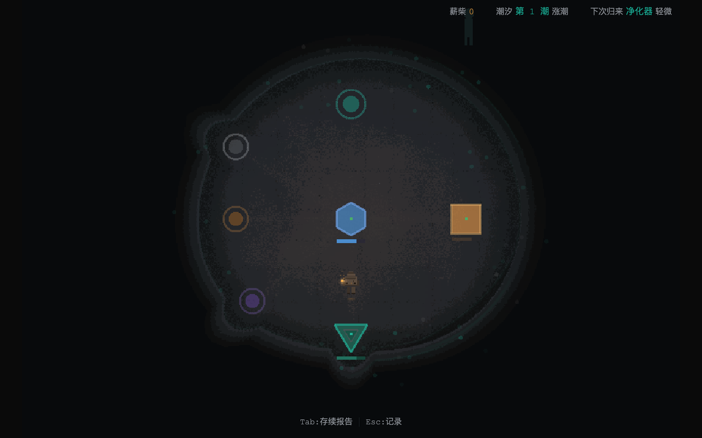
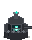
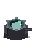
| 部位 | 颜色 | 说明 |
|---|---|---|
| 炉体结构 | #3a3d42 / #2c2e33 | 金属灰，保持工业感，让火焰成为唯一光源 |
| 火焰外焰 | #1a6b5c → #2ae6c8 | 与污染同源的 teal，替代原蓝色 #4488cc |
| 火焰内焰 | #7fffee → #dffff8 | 白热，只占 1–2px，是"高温"的读数 |
| 观察窗玻璃 | #0e202a | 极暗衬托，让火焰成为窗内唯一亮点 |
本轮踩的坑：第一版想用 alpha=0 的矩形当占位，
结果 PIL 的 Draw.rectangle 是直接替换像素而非 alpha 混合，
把刚画好的火焰整个抹成了透明。教训：在 PIL 里"不画"就是别调用，不要用透明矩形占位。
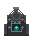
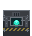
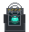
| 信号 | 实现 | 心理作用 |
|---|---|---|
| 密封 | 多重锁扣 / 六螺栓顶盖 / 加固肋 | "打不开"——它是被关住的 |
| 编号 | 铭牌上的刻痕（抽象为短竖线） | 被登记在册，是"项目"不是"箱子" |
| 警示 | 暗黄斜纹 #8a7a3a（不用亮黄） | 危险，但压得住暗色调 |
| 可见 | 观察窗内的 teal 微光 | 看得到里面那东西还在——恐怖感来源 |
关键取舍：观察窗内的光必须克制。 第一版我画了满窗的 teal，看起来像"整个箱子都在发光"，收容感全失， 变成了能量罐。改小到只透一点之后，"里面有东西被关着"的感觉才出来—— 收容的恐怖在于克制，不在于展示。
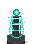
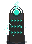
| 特征 | 实现 | 为什么 |
|---|---|---|
| 立式 | 高瘦，不再是"宽底座＋锥台" | 空气处理是垂直流：下进上出 |
| 悬浮/旋转 | 晶体环、同心环、断续描边 | 替代风扇叶片——不用机械语言也能表达"在吸" |
| 微粒 | 周围散布的 teal 小点 | "空气在流动"的唯一视觉证据，成本极低 |
微粒是关键：悬浮环本身是静止的（静帧）， 真正让人读出"在换气"的是那些被吸入的小点。 这也是三个方案里最便宜、最有效的一笔—— 十几个像素就把"它在工作"说清楚了。
| 层级 | 作用 | 在三模块中的体现 |
|---|---|---|
| 轮廓层（保留） | 身份识别 — 已建立，不动 | 六边形 / 方形 / 三角 |
| 体积层（新增） | 从"平面"到"物体" | 底盘+柱体 / 顶面+正面错位 / 双层嵌套提亮 |
| 结构层（新增） | 工业感 — 廉价高效 | 散热槽 / 分层线 / 三角锚点 / 加固块 / 锁扣 |
| 光源层（新增） | 给颜色一个物理理由 | 核心发光 / 指示灯 / 排放口 |
| 动效层（新增） | "它在工作" — 从静物到设备 | 核心脉动 / 液位线移动 / 排泄粒子 |
| 状态层（强化） | HP → 视觉，已有关联但不明显 | 裂纹加粗 / 角部凹陷 / 动效失律 |
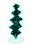
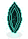
| 版本 | 内部做法 | 结果 |
|---|---|---|
| v1 | 随机 teal 斑块 | ✗ 读作噪点，不读作异界 |
| v2 | 径向渐变 + 5 根纵向"柱" + 6 处亮点 | ✗ 柱子打断了渐变，整体读作"花" |
| v3 | 11 层平滑渐变 + 3 道极淡竖向纹理（alpha 22–48）+ 2 处亮点 | ✓ 读作有厚度的空间 |
最关键的一处修正：撕裂边缘原本用暗色，结果裂口"消失"在画面里。 改成亮 teal 之后才对—— 裂缝是光透出来的地方，它应该是画面最亮处，不是最暗处。
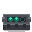
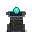
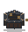
| 手法 | 说明 |
|---|---|
| 用机械，不用电子 | 旋钮/拉杆/齿轮/曲柄＝机械传动；不画屏幕、不画发光面板、不画线路 |
| 用旧材质 | 黄铜 #8a6a3a / 木 #4a3828 / 石，全部做旧，不反光、不崭新 |
| 明度分层 | 台面亮 → 前侧中 → 后侧暗 → 内嵌板最暗，拉开 40+ 的差值，体积才出得来 |
| 元件对比 | 旋钮用亮黄铜 #c09a5a、指针用极暗 #2a2018，指针是"能转"的读数 |
本轮踩的坑：第一版黄铜台面的明度挤在同一档（顶面 66 / 前侧 51 / 后侧 44）， 结果整个台子糊成一块橙色，读不出体积。 把层次拉到 43 / 62 / 90 / 99 / 168 / 192 六档之后， "台面—侧面—内嵌板"的关系才立起来。 复古材质尤其需要明度分层，因为它们本来就缺少强对比的固有色。
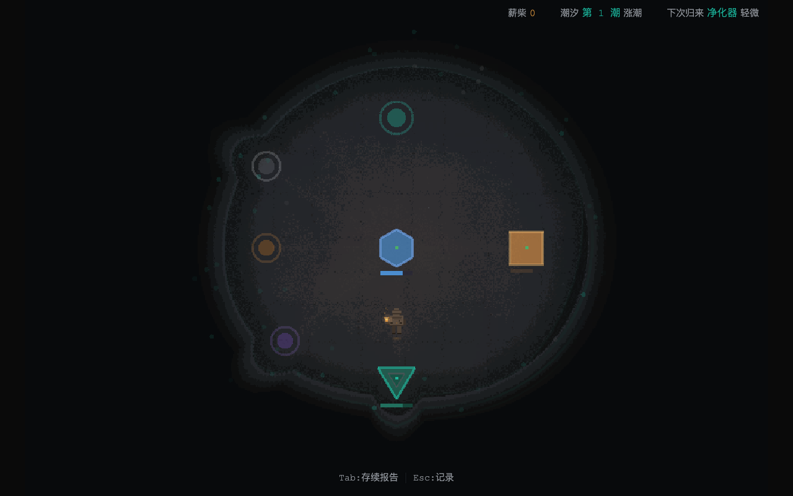
| 元素 | 成因锚点（必须有） | 自然感的技术实现 |
|---|---|---|
| 裂缝 | 从应力点起源：模块底座边缘（重压）、边界处（张力）、
动线转折点（反复摩擦）、已有裂缝的分叉点。 禁止从空地中央随机起步 |
用 Worley/Voronoi 噪声生成骨架（比随机折线自然得多）； 裂缝从起源点最宽、向末端收窄到 0； 主裂缝允许 1-2 条分叉，分叉更细且分叉后主干变细 |
| 污渍 | 有明确源头：模块底部（漏液）、边界（外部渗入）、
裂缝末端（积液）。 禁止无源污渍 |
从源头沿重力/坡度方向扩散；边缘用 Perlin 噪声调制使其不规则； 中心浓、边缘渐淡（径向 alpha 曲线）；不是完美圆——有流淌的方向性 |
| 足迹/磨损 | 沿真实动线：出生点 → 核心 → 裂隙入口， 以及核心 ↔ 储藏 ↔ 净化器之间的路径 | 不是均匀纹理，而是"路径带宽"：路径中线磨损最深（alpha 0.06）， 向两侧渐隐到 0（带宽 12-18px）。高频走过的路段更深 |
| 密度分布 | —— | 关键：用低频噪声调制高频细节的密度。 让某些区域密集、某些区域干净。 均匀分布 = 立即识别为程序化 |
| 尺度分层 | —— | 大裂缝（30-50px，全图 2-3 条）+ 中裂缝（15-30px，5-8 条）+ 细纹（<15px，高频噪声，仅近处可见）。三层叠加而非单一尺度 |
| 颜色 | —— | 比地面暗 1-2 级（#0a0b0c / #101214）。 禁止纯黑、禁止亮色描边。 痕迹应该"被看见"，不应该"跳出来" |
| 与光照交互 | —— | 高价值：裂缝在玩家灯光经过时显现（侧光产生阴影感）， 离开时隐入黑暗。这让地面成为"被探索"的对象而非静态背景 |
| 边界过渡 | 越靠近安全区边缘，维护越少 | 边缘 1-2 tile 范围内，污渍/裂缝密度提高 2-3 倍， 出现不规则暗斑（alpha 0.10-0.15）。读作"这边更潮湿/更不稳定/没人管" |
| 总覆盖率 | —— | 5-8%。记住 art-direction 的"低信息密度"原则—— 目标是"有痕迹"不是"有装饰"。宁少勿多 |
| 确定性 | —— | 用固定 hash（如现有的 mulberry32）绑定种子。
同一局游戏内痕迹不变——玩家会记住"核心左边那条裂缝"，
这种空间记忆是沉浸感的重要来源 |
因果分布示意（俯视）： ≈≈≈≈≈≈≈≈≈≈≈≈≈≈≈≈≈≈≈≈≈≈≈≈≈ ← 边界：污渍/裂缝密度↑↑，暗斑 ≈ ▓▓ ≈ ▓▓=污渍（源头：模块底部/边界） ≈ ▓ ≈ ≈ ⬢▓ ────── ▣▓ ≈ ⬢=核心 ▣=储藏 ▲=净化器 ≈ │ ╲ ▓ ≈ ── = 外接管线 ≈ │ ╲ ▲▓ ≈ ╲ = 动线（足迹带宽） ≈ │ ╲ ≈ ≈ = 边界侵蚀带 ≈≈≈≈≈≈≈≈≈≈≈≈≈≈≈≈≈≈≈≈≈≈≈≈≈ 裂缝起源点必须是：模块底座 / 边界 / 动线转折 / 已有裂缝分叉 禁止：均匀网格分布 · 等间距重复 · 完美对称 · 无源污渍 · 空地中央起步
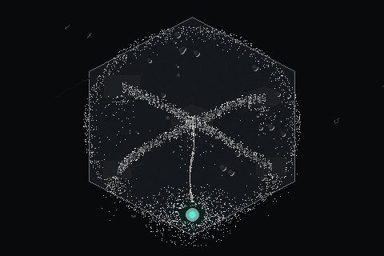
六边形安全区内：① 各模块底座边缘派生应力裂缝，底部漏液沿重力淌成污渍；
② 核心 ↔ 储藏 ↔ 净化器 ↔ 裂隙 ↔ 两个交互点的动线磨出带宽状痕迹；
③ 边界内侧密度陡增并长出苔藓；
④ 裂隙（下方）向四周辐射污渍与苔藓，并把地面拽向自己；
⑤ 三条大裂缝各自从应力点起源，而非空地中央。
自检办法：把图缩到 25%。若仍看得出"有的区域脏、有的区域干净"，
说明低频密度调制成功——实测区块标准差 6.75（均匀分布会低于 2）；
若变成一片均匀的灰，说明细节是平均撒的，要重做。
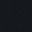
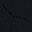
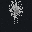
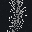
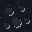
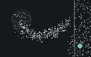
① 左上六角核心的底座边缘产生应力裂缝，底部漏液沿重力向下扩散成污渍； ② 核心 → 储藏 → 净化器的动线形成带宽状磨损（中线最深）； ③ 右侧边界 20px 内密度陡增、出现暗斑； ④ 右下裂隙向外辐射污渍与苔藓； ⑤ 两条大裂缝均自应力点起源（底座、边界），而非空地中央。
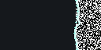
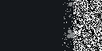
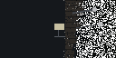
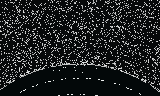
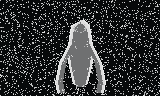
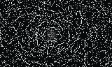
做法说明：全部用"极暗 + 少量形体暗示"实现。
这比纯黑或画清晰的怪物都更有效——
纯黑等于没做，画清楚反而不吓人。
技术要点：当形体与背景的明度差只有 2–3 时，
靠明度区分会完全失效。巨眼那一版就踩了这个坑：
眼球内部与虚无只差 3，等于隐形。
改用色相区分（眼球偏 teal、虚无偏中性）并加一层体积渐变之后，
"那里有个球体"才读得出来。
最后：外部的价值恰恰在于那个"看不清"的距离——
玩家会用自己的想象填满它，而想象永远比画出来的更可怕。
✓ v1 判断已确认 — 以下是执行细化，方向不变。
background:rgba(15,17,20,0.82); border:1px solid #2a2d32; padding:8px 12px;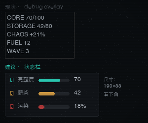
改造后每项都是图标 + 迷你进度条 + 数值三件套： 完整度（teal，最重要）／薪柴（暖橙）／污染（红）。 进度条让"还剩多少"无需读数字即可判断—— 长度是可以被余光捕获的，数字不行。
Tab:存续报告 Esc:记录 裸文字贴在底部，无容器、无动画。background:rgba(15,17,20,0.88); border:1px solid #2a2d32; padding:5px 16px;[E] 用亮色 #c8cdd4 +
方括号；描述用暗色 #8a8f96；间距 6pxHP 60/100 · 混乱抑制 -18%。
这让"要不要现在交互"可以在移动中决策，不必先打开面板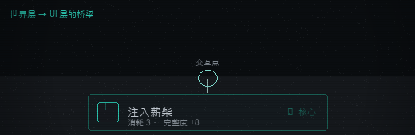
按键 [E] 用亮色 + 方括号（读作实体按键），动作名 14px 为主；
副行 10px 给出「消耗 3 · 完整度 +8」——
让玩家在移动中就能决定要不要交互，不必先打开面板。
右端标出作用对象（⬢ 核心），避免"这个 E 是按给谁的"的歧义。
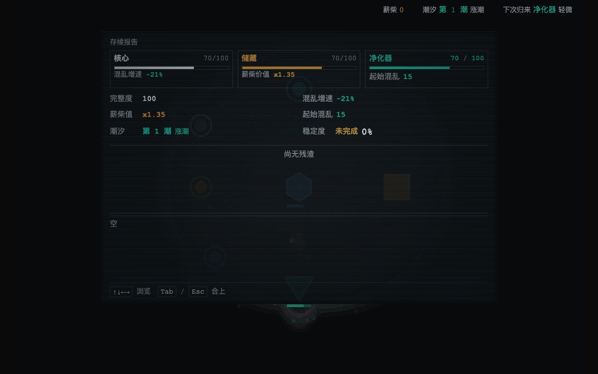
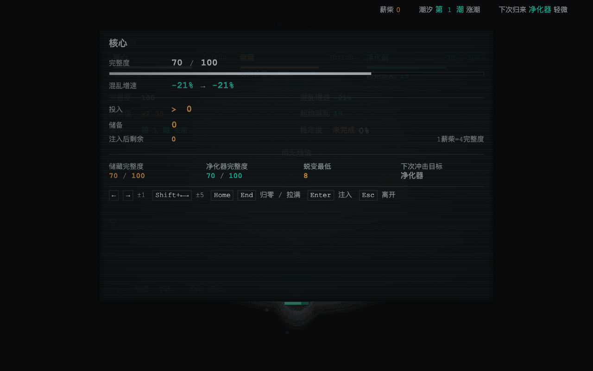
| 维度 | 网页式（当前） | 游戏菜单式（应该） |
|---|---|---|
| 信息呈现 | 所有内容同时可见，靠眼睛扫描 | 层级递进，一次只显示一层 |
| 导航方式 | 滚动 / 扫视 / 搜索 | 方向键 + 焦点，位置即状态 |
| 空间组织 | 纵向堆叠，内容多长页面多长 | 固定视口，主区+从区，导航切换内容 |
| 焦点 | 无明确焦点，用户自己找 | 始终有一个"当前选中项"，视觉跟随 |
| 详情处理 | 和概览混在一起平铺 | 渐进披露：选中后才展开详情 |
| 操作 vs 信息 | 混排 | 分离：可操作项有明确焦点，只读信息降为次要 |
| 心理模型 | "阅读一份文档" | "操作一台设备" |
┌──────────────────────────────────────────────┐ │ ⬢ 核心 ▣ 储藏 ▲ 净化器 │ ← 固定模块条 │ 70/100 70/100 70/100 │ 一眼扫完，不随导航变化 ├──────────────┬───────────────────────────────┤ │ ▸ 全局状态 │ │ │ 成长升级 │ [选中分类的内容] │ ← 左：导航（一次激活一项） │ 工具清单 │ │ ← 右：详情（跟随导航切换） │ 污染物 │ 内容填满这个区域， │ │ 出击记录 │ 不留大片空白 │ │ │ │ ├──────────────┴───────────────────────────────┤ │ ↑↓ 选择 Enter 展开 Esc 合上 │ ← 键印 └──────────────────────────────────────────────┘ 改变： · 顶部三条 = 最需要"一眼扫完"的，固定不动 · 左侧导航 = 信息分类，玩家知道"有哪几类"（5-6 项） · 右侧详情 = 渐进披露，一次只显示一个分类的内容 · 空间利用率高 — 详情区填满，消除 40% 空白关键收益：
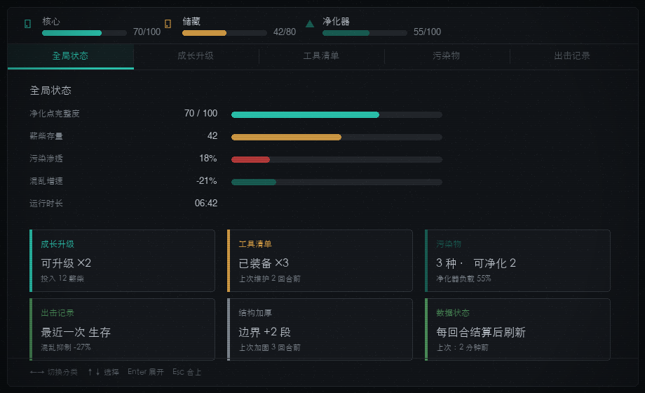
① 顶部模块条固定不动——核心/储藏/净化器的完整度一眼扫完，且不随导航变化； ② 左导航一次只激活一项（当前是"全局状态"，带 teal 竖条 + 高亮底色）； ③ 右详情被填满——5 行读数 + 2×2 卡片网格， 实测最大连续空白从 144px 压到 37px（余下的是正常内容间距）； ④ 底部键印常驻，告诉玩家"这里可以用键盘操作"。
┌──────────────────────────────────────────────┐ │ ⬢ 核心 │ 储藏 │ 净化器 │ ← Tab 式切换 ├──────────────────────────────────────────────┤ （不是三个平铺信息块） │ │ │ 完整度 ████████░░ 70/100 │ │ 混乱增速 -21% → -27% │ ← 主区：当前模块 │ │ （只显示一个） │ ┌────────────────────────────────────┐ │ │ │ 投入 [ ◀ 12 ▶ ] │ │ ← 唯一操作控件 │ └────────────────────────────────────┘ │ 视觉焦点，框起来 │ │ ├──────────────────────────────────────────────┤ │ 出击预估 混乱抑制 27% · 生存 中 │ ← 决策反馈（关键新增） ├──────────────────────────────────────────────┤ │ ←→±1 Shift±5 Enter 注入 Esc 离开 │ └──────────────────────────────────────────────┘ 三个关键改变： 1. 三模块从"平铺三块"改为 tab 切换 — 一次只处理一个决策对象 2. 「投入」是唯一操作控件，用框+高亮成为明确焦点 3. 底部加「出击预估」— 让分配决策有即时反馈闭环为什么"出击预估"是关键： 分配的本质是"我做这个选择，下次出击会怎样"。 当前面板只告诉玩家"这个模块的效果变成 -27%"， 但玩家真正想知道的是"我下次出击能不能活下来"。
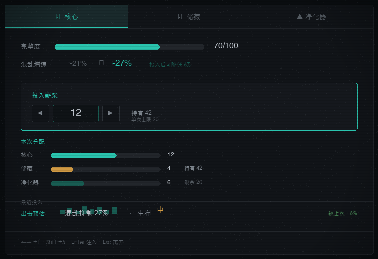
① Tab 切换替代三个平铺信息块，一次只处理一个决策对象（当前是核心，带 teal 下划线）；
② 完整度与混乱增速并排，用 -21% → -27% 表达"如果投入会变成什么"；
③ 「投入薪柴」是唯一控件，用 teal 边框 + 深色底把它框成视觉焦点，
步进器 ◀ 12 ▶ 直接可操作；
④ 中段补了分配概览与最近投入 sparkline——
第一版这里留了 162px 空白（正是本文批评的"网页平铺"），
补上之后最大连续空白降到 10px；
⑤ 底部出击预估给出"混乱抑制 27% · 生存 中 · 较上次 +6%"，
让每一次 +/- 都有即时反馈。
抵御裂隙隐蚀… + 混乱积累 -4%。
氛围和实用性不必二选一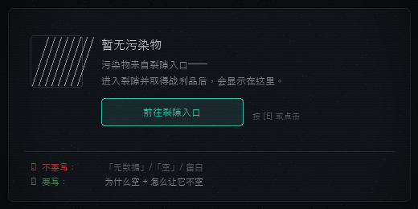
三件套缺一不可： ① 这是什么（"暂无污染物"）——斜线填充的占位框表示"这里将来会有东西"； ② 为什么空（"污染物来自裂隙入口，取得战利品后会显示在这里"）—— 把空的原因翻译成下一步的线索； ③ 现在该做什么（"前往裂隙入口"按钮 + 快捷键）—— 给一个可点击的出口，而不是让玩家自己去找。
✓ v1 判断已确认 — 以下是执行细化。
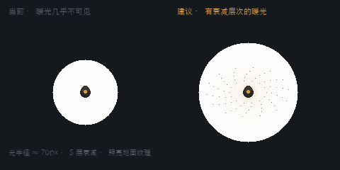
建议版本用 70 / 56 / 42 / 30 / 18 五层半径做径向衰减
（alpha 分别 10 / 18 / 28 / 42 / 60），
边缘用 (1-d/r)^0.6 的曲线让它自然过渡而非生硬圆环。
关键不是"更亮"，而是"照亮了东西"——
光圈范围内刻意点了地面颗粒，让暖光有东西可照。
光打在纯色地面上是没有存在感的，只有照出纹理，玩家才会意识到"这里有个光源"。
另：与 3.2 节地面裂缝联动后，玩家走过时裂缝会被侧光"显影"，
地面就从背景变成了被探索的对象——这是本章性价比最高的一笔。
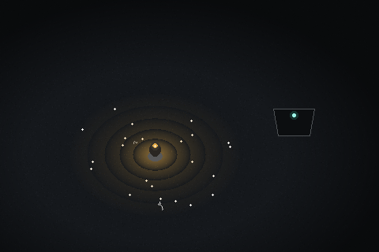
① 暖光半径 ≈108px，5 层径向衰减（alpha 26/44/70/104/150，
曲线 (1-d/r)^0.6）避免生硬圆环；
② 光圈内才生成地表细节——颗粒、裂缝、石子。
光打在纯色地面上是没有存在感的，只有照出纹理，
玩家才会意识到"这里有个光源"；
③ 石子的投影方向一致（光来自玩家），这是"光有方向"的读数；
④ 暗角压低画面外围，强化"光是有限的、外面是危险的"；
⑤ 远处模块只被照亮一侧边缘，给出空间纵深。
角色的处理：身体刻意压暗、光源核心提到近白（#fff8e8）。
否则角色会被自己的光池淹没——第一版就犯了这个错，
整个中心糊成一团暖色，分不清哪是角色、哪是光。
按"对玩家第一印象的影响程度"排序，不考虑技术难度。 第一梯队决定玩家是否觉得这是个"做完的游戏"。
上面的「梯队」是体验视角（按对玩家第一印象的影响排序）。 派工时用另一套口径——B1–B5 批次（按「单次 agent 会话能否独立完成、独立可看、独立过闸门」拆分）。 两者排序逻辑不同，不需要强行统一，但必须对得上号：
| 本报告梯队 | 批次 | 范围 | 独立性 / 共享产物 |
|---|---|---|---|
| 第一梯队 1 | B1 | 四个交互点（§2） | ✅ 独立。裂隙入口建议单独一审（最贵，也是记忆点） |
| 第一梯队 2 | B2 | 三个模块实体（§1） | ✅ 独立，独占 purification-module.ts |
| 第一梯队 3 + 第二梯队 4 | B3 | HUD + 底部提示条（§5） | ⚠ 与 B1 共享 purification-scene.ts → 建议串行，先 B1 后 B3 |
| 第二梯队 3 | B4 | 面板信息架构（§6） | ⚠ panel-styles.ts 全局共享 → 只改消费方，禁改基元 |
| 第二梯队 1 / 2 + 第三梯队 1 / 4 | B5 | 地面 + 外部（§3 / §4） | ✅ 独立。与迭代 5 / 9 无共享产物 |
| 第二梯队 5 + 第三梯队 5 | — | 玩家灯光（§7）+ 面板 CRT 噪声 | 并入迭代 9，不进本包批次 |
净化点的问题不是缺功能，是缺"完成度"。
所有系统都在正确的地方——交互逻辑通了、颜色编码通了、面板功能通了、程序化渲染通了。
但每一件东西都停在了"能用"的最低标准：
形状能识别，但不像物体；信息能看到，但不好用；氛围有底色，但没有细节。
v2 的核心判断比 v1 更锋利：当前所有世界内实体都是占位符。
把六边形变成反应装置、把圆点变成空间裂缝、把平铺面板变成主-从菜单——
这三件事做完，净化点就从"原型"变成"游戏场景"。
优先级上，裂隙入口的重做应该是第一件事——
它是通往游戏主体内容的门，也是玩家每次回到净化点都会看到的东西。
一个设计得好的空间裂缝，能把这个场景的完成度整体拉高一个档次。